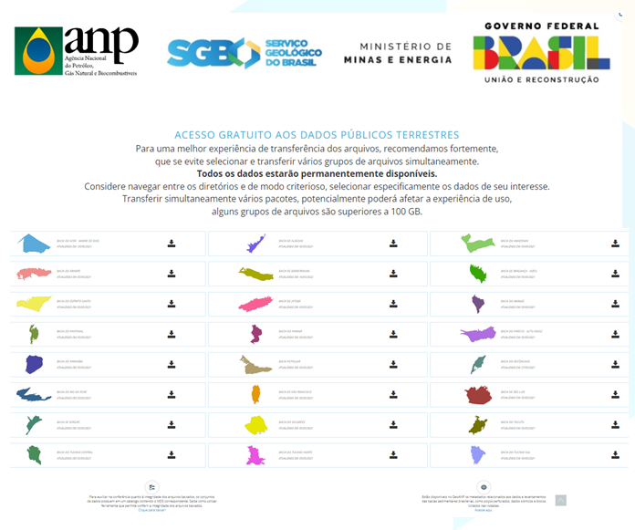

Disponibilização Gratuita de Dados Técnicos Públicos Terrestres

Resumo em Português
Conforme decisão da Diretoria Colegiada da ANP em 11/03/2021 e em 24/03/2022, por meio da Resolução nº 149/2021, a ANP passa a disponibilizar gratuitamente todo o seu acervo de dados técnicos públicos associados às bacias sedimentares brasileiras em ambiente terrestre. Trata-se de ação de fomento relacionada ao Programa de Revitalização da Atividade de Exploração e Produção de Petróleo e Gás Natural em Áreas Terrestres (Reate). A ação contempla 24 bacias sedimentares e corresponde a dados técnicos digitais de poços, de sísmica 2D e 3D, assim como aqueles associados às tecnologias geofísicas não sísmicas, geoquímicas e seus estudos, sísimica pre-stack dos dados sísmicos terrestres. O objetivo é promover a ampliação do conhecimento geológico sobre as bacias terrestres e fomentar os investimentos em exploração e produção de petróleo e gás natural nas áreas já sob concessão e nas que serão oferecidas em futuras rodadas de licitações.